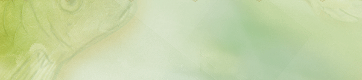

Danse mortuaire
Cantatrice de ses morts
À vos tripes le son sort
Baignez les de ce souffle
Ces pauvres là souffrent
Voisins cadavériques
Emplis de toutes vos tiques
Faites place aux enchairés
Ils seront bientôt vidés
Cercueil de tous recueils
De votre mauvais oeil
Brisez votre coque moisie
Ces pauvres là sont finis
Famille de faux pardons
Rugissantes de compassion
Gardez vos langues viperées
À ceux qui pourrissent
Sortez entre les varices
De ceux qui vous glacent les os
L'art de boire
Sang, sans vie
Sans soucis
Sang, cent vies
Sans soucis
Sang, sang de vie
Sans sursis
Sang, sans sang
Sans sursis
Sang qu'on boit
Sang sanglant
Sang sans foi
Sang saignant
L'art de boire
Dessuèt
Sur la pénombre étendue gisent les vestiges des cœurs mal aimés
Une âme qui file au vent au gré des bourrasses perdues
Et moi mon corps disparaît, disparaît et s'efface
Sur la montagne franchie meurent les vallons des arbres tombés
Une fleur qui fane au temps au gré d'une jeunesse perdue
Et moi mon corps disparaît, disparaît et s'efface
Sur le creux souillé choient les baleines des mers abîmées
Une vague qui file au courant au gré des marrés basses
Et moi mon corps disparaît, disparaît et s'efface
Sur le monde oublié meurent les gens des vies déchirées
Une mort qui pend au cou au gré des bourreaux noirs
Et moi mon corps disparaît, disparaît et s'efface
Sur la joie perdue gisent les vestiges des gens mal aimés
Une âme qui file au temps au gré des heures passées
Sur le lieu caché meurent les âmes des mères déchirées
Et moi mon corps disparaît, disparaît et s'efface
I dont believe in goD
I don't believe in God
That's the pièce of moi
J'ai renié my religion
Pour the bless des demons
I don't believe in God
That's the raison I donne
J'ai blasphêmé three fois
Pour the power des demons
I don't believe in God
That's the chose I sais
J'ai tué my crusifix
Pour wearing baphomets
I don't believe in God
That's the best I fais
J'ai viré the sens
Pour creating l'animal
Dogme de foi(Notre Père est l'autre frère)
Notre croix qui est au cou
Que ton bois soit scié
Que ton appât tombe
Que ta puissance soit faible
Sur la Terre comme en enfer
Rends-nous aujourd'hui
Notre foi de jadis
Laisses-nous donc nos péchés
Comme nous péchons avec ceux qui nous ont recruté
Ne nous soumet pas à ta chrétienté
Mais portes-nous près du mal
Amen
Dieu, tu m'as appris à aimer ton voisin...
Le tournoi
J'aurais voulu pleurer ma peur
Mais mes yeux me faisaient mal
Hasardantes mes lèvres battaient
L'air sans émettre un son
Je tentais de garder la tête haute
Malgré la lourde charge donnée
La victoire me semblait imprenable
Et l'heure du crime sonna
Les sueurs roulantes sur mon corps
Asséchées par la chaleur de la mort
Mes amis cachés par leur courage
Oublient la peur pour un moment
Heure de chants et beaux discours
Avant le grand affrontement
Je voudrais pouvoir m'enfuir
Mais mes jambes sont immobiles
L'épée est tendue à mes doigts
Ma main serre douloureusement
L'arme d'argent sifflante
Son éclat aveuglant me fait
Lever les yeux aux nuages
Tous les diables et démons
Me guettent et me surveillent
J'avance lentement au centre
Mon adversaire semble géant
Mes genoux devraient trembler
Ils devraient mais restent encrés
Je me bats pour survivre
Je me bats pour gagner
Je me bats pour eux...
La mort tournoie sans cesse
J'ai peur, j'ai peur, je suis blessé
Je vais mourir...Non, je veux vivre!
Mes forces reviennent à elles
D'un miracle, ma prise vainc
J'ai surmonté mon triste destin
Mon coeur se rempli de sang
Du sang que mon ennemi verse
Je bois ma victoire en secret
Et je pleure d'être vivant
Et je pleure le sang
De ceux qui oublient...
Les chauves-souris
Mes fidèles amies vivent dans la taule
Elles jonchent les toits des cathédrales
Mes fidèles amies disparaissent à l'aube
Elles sont cachées sous les cathédrales
Mes fidèles compagnes sont de noir
Elles se juchent dans les catacombes
Mes fidèles compagnes aiment le soir
Elles me suivent à travers le monde
Mes fidèles collègues ont des crocs
Elles se nourrissent de sang humain
Mes fidèles collègues ont des crocs
Elles sont toutes comme leur souverain
Les feux jaillissent des endroits maudits
C'est la nuit que les fantômes sortent des murs, les zombis d'entre les tombes et les vampires des cercueils.
Mais c'est aussi la nuit que les hommes dorment, sur leurs peurs, enveloppés de leurs certitudes subtiles.
C'est aussi la nuit que l'obscure frappe.
Dans le noir, l'homme ne voit pas ce qu'il ne veut pas.
Dans la nuit, il est maître de ses rêves.
La nuit, les frissons ne sont permis que par la brise.
Quand il fait nuit, les monstres n'existent plus en eux.
La nuit, tout est endormi.
Mais les fantômes eux, sortent des murs, les zombis d'entre les tombes et les vampires des cercueils.
Mais c'est aussi la nuit que les monstres vivent, sur leurs viscères, déchirées de leur cruauté subtile.
C'est aussi la nuit que l'obscure frappe.
Dans le noir, les créatures voient ce qu'ils veulent avoir.
Dans la nuit, ils sont maîtres de leurs fantasmes.
La nuit, les frissons ne sont permis que par la peur.
Quand il fait nuit, les humains n'existent qu'en eux.
La nuit, tout est endormi…tout est endormi…
|  | ||||
|
|
|
|
|
|